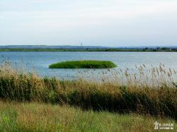
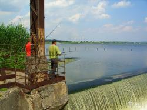
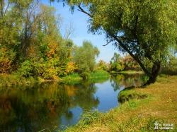

Начиная с 1985 года, ежегодно 27 июня отмечается Всемирный день рыболовства. Праздник установлен решением Международной конференции по регулированию и развитию рыболовства, состоявшейся в июле 1984 года в Риме.
Vgorode.ua поздравляет всех рыбаков с праздником!
Древние греки считали, что время, проведенное на рыбалке в зачет жизни не идет. Так что все любители этого увлечения имеют все шансы прожить дольше!
В честь "профессионального" праздника работников удочки и крючка Vgorode.ua разузнал самые "клевые" места на водоемах области. На самом деле в Луганском крае огромное количество мест, где можно порыбачить: от "общественных" бесплатных до платных зарыбленных прудов.

Валуйские озера.
Рыба: карп, карась, амур, щука, толстолоб, судак, сом, жерех, окунь, плотва, лещ, раки, линь, форель, голавль, угорь
Макимальная глубина: 5 м
Площадь водоема: 4 га
Примечание: красивая природа, свежий воздух, располагает не только к рыбной ловле, но и к отдыху.

Пруд-охладитель.
Рыба: карп, карась, щука, сом, окунь, плотва, лещ, раки, линь, густера
Максимальная глубина: 3 м
Площадь водоема: 2 га
Примечание: заезжать с асфальта по бетонным плитам вокруг водоемов
Рыба: карп, карась, щука, окунь, плотва
Максимальная глубина: 6 м
Площадь водоема: 2 га
Примечание: глубокое илистое дно
Рыба: карп, толстолоб, плотва
Максимальная глубина: 7 м
Площадь водоема: 2 га
Примечание: говорят, что там водятся очень крупные толстолобы

Айдар.
Рыба: карп, карась, амур
Максимальная глубина: 7 м
Площадь водоема: 4 га
Примечание: скромно величают себя лучшим прудом в Луганской области. Рыба идет отменно.
Рыба: карась, карп
Максимальная глубина: 3 м
Площадь водоема: 5 га
Примечание: с Айдара на Старобельск после Шульгинки поворачивать направо возле остановки
Рыба: карп, карась, амур, плотва, раки
Максимальная глубина: 4 м
Площадь водоема: 15 га
Примечание: 85км от Луганска в сторону Старобельска. Ставок оборудован!
Рыба: карп, карась, амур
Максимальная глубина: 7 м
Площадь водоема: 4 га
Примечание: скромно величают себя лучшим прудом в Луганской области.
Рыба: линь, раки, лещ, плотва, окунь, толстолоб, щука, амур, карась, карп
Максимальная глубина: 20 м
Площадь водоема: 120 га
Отловочный билет: 60 грн
Примечание: много крупного толстолоба.
Рыба: амур, толстолоб, карась, карп
Максимальная глубина: 3 м
Площадь водоема: 12 га
Примечание: сильно илистое дно и крутые берега - мало удобных мест для стоянки авто. Много мусора на местах ловли, уборкой никто не занимается. Зато здесь водится крупный сазан до 6-9 кг.
Рыба: карп, карась, амур, толстолоб, окунь, плотва
Максимальная глубина: 4 м.
Площадь водоема: 5 га
Отловочный билет: 50 грн/сутки
Примечание: от Северодонецка 26 км. Подъезд к пруду - асфальт. На озеро очень чисто.
Рыба: раки, лещ, судак, амур, толстолоб, карась, карп
Максимальная глубина: 6 м
Площадь водоема: 30 га
Отловочный билет: 100 грн.
Примечание: отменная рыбная ловля, красивая природа, уютные пляжи.
Рыба: карп, карась, щука, толстолоб, судак, сом, жерех, окунь, плотва, лещ, раки, линь, голавль, угорь, густера
Максимальная глубина: 10 м
Площадь водоема: 98900 га
Отловочный билет: -
Примечание: лучшие места ловли - от автомобильного моста села Сокольники до села Трехизбенка Славяносербского района; от ж/д моста станции Новокондрашевская до села Паньковка; от села Давыдо-Никольское до селаБольшой Суходол; от моста Станицы Луганской до села Николаевка.
Запрещается лов рыбы, занесенной в Красную Книгу Украины: вырезуба, ельца Данилевского, миноги украинской, стерляди, а также редких видов: менька, рыбца, осетровых и их гибридов.
{kind=link}
{kind=link}
{kind=link}